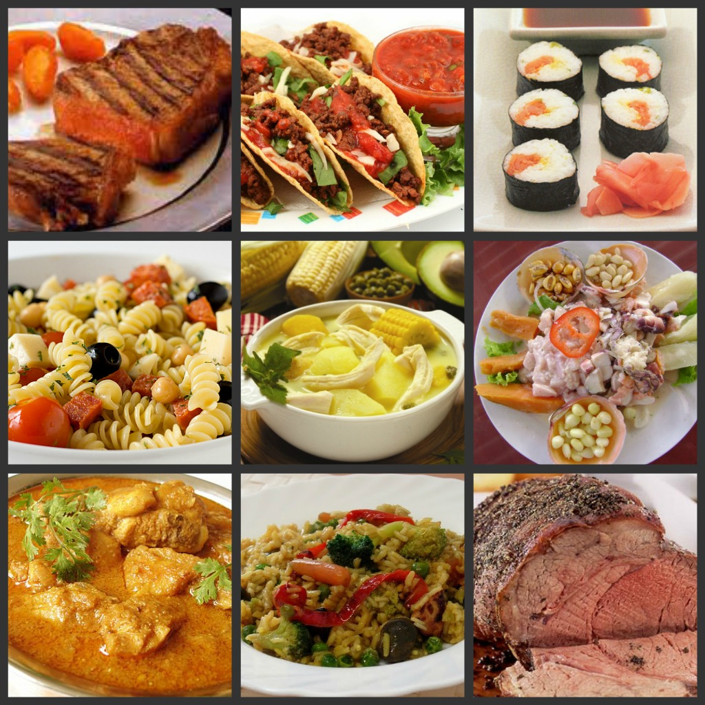

Gastronomia
Em Balneário, você pode encontrar uma variedade enorme de culinárias, onde muitas vezes, você tera a opção de pratos da cozinha italiana, japônesa e o nosso famoso churrasco, tudo no mesmo lugar, mas é claro que tem os restaurantes focados em uma culinária expecífica, e eles estão espalhados pela cidade inteira, e os valores variam, geralmente quanto mais próximo à praia, mais o valor do prato aumenta, claro que tem suas excessões, mas logo falaremos de forma mais expecífica sobre onde encontrar a culinária e o preço perfeito para você.